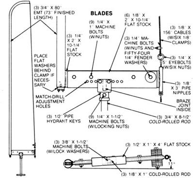

Last issue, we published a complete how to article detailing the construction of a homemade, dollar-a-watt windplant, the Red Baron, designed with the first-time builder in mind. That "trainer" set the stage for the second-generation wind machine you see on these pages . . . a 350-watt generator that isn't much more difficult to assemble than the first version was, yet which employs a number of fairly sophisticated - but simply executed - features.
We've dubbed our latest project the Blue Max . . . and because of its potential as a reliable small-scale power producer, we opted to go the extra mile and include some machined parts in the design to enhance its serviceability and performance.
Still, even with the added machining expense, this "deluxe" windplant - less the tower and battery storage - is an even better bargain on a cost-per-watt basis than was the simple trainer. Though we spent $347 on new and rebuilt parts, a creative scrounger could probably use a junkyard alternator and second-hand plumbing fittings and build the machine for $200.
It's apparent from our photos and illustrations that the Blue Max is a first cousin to the earlier design, specifically in the use of fabric "wings" and iron-pipe frame components. Naturally, we've upgraded the fitting sizes and utilized an automotive alternator for this beefed-up version, and we've also added a disc brake and a tail with an improved span-to-chord ratio.
Furthermore, other features were included to enhance the plant's performance: Both the rotor shaft and jackshaft are machined to accept industrial-rated drive sheaves and ride on sealed ball bearings mounted in fixed seats. The rotor hub incorporates a pitch control mechanism which, together with the blade frames, allows a smooth and efficient transition from start-up to generating speeds (see the sidebar).
Unfortunately, we weren't successful in avoiding the use of welded joints entirely . . . but those that do exist are simple enough to be set up and farmed out. As for the threaded pipe joints, we'd suggest drilling the fittings and locking each of them with a 1/4" thread-cutting screw once the parts are assembled.
The illustrations included in this article cover the construction details pretty thoroughly . . . but we'll go over a few specific areas that might benefit from a bit more explanation. First, the bearing fit on both shafts is important. Each unit should be centered firmly in its seat, and the spacers trimmed square to avoid misalignment or uneven wear. Fine adjustments can be accomplished by threading the bearing housings in or out as necessary.
Equally critical is the placement of the hub components; not only does this affect the balance of the finished rotor, but it also determines the accuracy and ultimate effectiveness of the blade pitch mechanism. The shaft housings must be perpendicular to the hub walls and an equal distance from the hub plate and mount. Likewise, the pitch stop brackets need to be positioned, as indicated, 40 degrees counterclockwise in relation to the housings when the hub is viewed from the rear.
While we're on the subject of blade pitch, it's important that you accurately duplicate the angles recommended in the blade frame detail. Note that the shaft retainer arms are set parallel with the frame mounts . . . and fixed there with machine bolts and 1/8"-rod locating pins. Also, don't ignore the fact that the blade tips lie forward of the frames by 11 degrees.
The plastic-pipe governor switch housings are held in place with hose clamps and can be locked at any point along the jackshaft output sheave spokes. The farther they are from the pulley hub, the sooner they'll activate the solenoid that engages the alternator's field windings. The slip ring hub - a bushing that's simply turned from a chunk of Delrin (but which could just as easily be molded from phenolic resin or any other nonconductive material) - is pinned to that jackshaft pulley and jacketed with a small section of 1-1/2" copper pipe heated and quench-fitted in place.
Unlike many other sail-wing wind machines, ours doesn't use a taut woven fabric. Though a nylon or sealed canvas could serve as an effective skin, we opted to keep initial costs down by utilizing polyethylene tarp material on the blades and tail. (Admittedly, it will probably need to be replaced periodically, depending upon local weather conditions.) Don't waste time trying to stretch the fabric tightly over the frames. It's better to just firm it up and concentrate on double-stitching the folded-over seams on the tail and the leading seams on the blades (the latter will ultimately be hidden when the sleeves are turned inside out and fastened between the framemount clamps).
As was the case with our trainer windplant, the Blue Max should be mounted on a tower 20 or more feet above any obstructions and several hundred feet away from them. Since the alternator produces a maximum of 25 amps or so at a regulated 13.8 volts, a bank of automotive batteries - using a circuit wired as shown in our diagram - should make an ideal storage system. (If you're interested in monitoring wind direction and velocity before building your plant, you might consider assembling the inexpensive weather station featured in MOTHER NO. 68, page 176.)
Whether you're merely curious about the viability of wind power or determined to apply the potential of this form of alternative energy, our home-built plant represents a cost-effective means to that end . . . and a chance to be one of "them that's doin' "!
Our windplant's sail-wing design eliminates many of the construction headaches associated with hard-skinned, internally supported blades . . . while still retaining an acceptable portion of their efficiency. This is due, in part, to the fact that we've combined traditional fabric-over-frame construction with simple but effective blade pitch controls to allow the rotor near-optimal performance at both start-up and working velocities.
Because the alternator requires a fairly stiff (15.75-to-1) gear-up to bring it into its prime-efficiency RPM range at reasonable wind speeds, a good deal of initial torque is needed to start the plant from a dead stop. Conversely, once the alternator and the mass of the rotor are set in motion, power (the rate at which work is accomplished) - not torque - becomes the critical factor.
To satisfy this inconsistency, we incorporated a series of mercury switches into the jackshaft output sheave to control energization of the alternator's field windings. These keep the field circuit open (and the alternator unloaded) until the rotor reaches a speed of about 56 RPM, at which point centrifugal force closes the switch bank to activate the alternator.
However, this cut-in governor is only the first step in prompting an efficient transition from start-up to full operation. More effective - especially at greater wind velocities - is aerodynamic control, in our case accomplished by varying the blades' pitch to suit generator load and wind speed. Simply stated, an extreme pitch angle is necessary to develop torque under high-load conditions . . . but the broad profile presented by those cocked blades only gets in the way as wind (and rotor) velocities increase. The solution is to decrease the pitch angle under these conditions and allow the fabric airfoils to pull the blades along their rotary path with minimal drag.
The very nature of a rotating body such as the hub and blade assembly favors automatic pitch control: The blades "want" to seek their plane of rotation as the rotor gains momentum . . . so much so, in fact, that we've included several compensating features in our design to regulate the rate and degree of this in-transit "upshift."
First, you'll note in the blade detail diagram that the blade shaft joins the frame mount off-center, so the blade's trailing section is broader than its leading one. This inequality is adjustable (notice the series of mounting holes) and assures that even mild wind pressures return the blades to the full-pitch position for start-up. It also serves to buffer the potentially damaging effects of strong gusts at speed; these should be enough to re-pitch the blades to their "slow" position, thus spoiling airflow and reducing the rotor velocity.
A second adjustment at the cable eyebolt changes blade-frame tension, which relates, again, to the distance each blade's surface is drawn past center. Furthermore, the blade tip twists as the cable is tightened, which enhances high-speed operation . . . but too much tension can crimp the blade frames and distort the tips beyond the plane of the rotor, both undesirable situations. In practice, a moderately stressed frame is ideal because it's taut yet allows enough slack in the blade fabric to cause "ballooning" at the tips as the rotor approaches its upper RPM limit, which has somewhat of a braking effect.
The fender-washer governor weights constitute the third means of adjustment. They're fastened near the trailing edge of the blade-frame mount; the more you add, the sooner the plant will upshift.
Finally, high-speed blade pitch can be set by adjusting the stop bolts in the hub. We found a blade-frame angle of 19 degrees from vertical (measured at the hub end) to work best, but because of the varying degrees of workmanship - and air density - that will affect each home-built windplant, it'll most likely be necessary to experiment not only with pitch, but with the other variables, as well, to tune your machine to local conditions.
Output: 350 watts maximum (at 26 mph)
Start-up wind speed: 7 mph
Charging wind speed: 12 mph
Shutdown wind speed: 32 mph
Total weight: 117 pounds
Tip-speed ratio: 3.56
Rotor diameter: 14 ft.
Rotor swept area: 154 sq. ft.
Rotor solidity: .11
EDITOR'S NOTE: For those who might not feel entirely confident of their ability to construct this project even with all the information given here, a set of step-by-step building plans for the windplant - detailed with illustrations and photographs - is available.
|
The blades are covered in polyethylene tarp to capture the wind. The Blue Max wind turbine uses an alternator to generate electricity. |
Materials list for the wind generator. |
Assembly details for the wind turbine. |
|
Materials list of the hub and rotor shaft of the wind generator. |
Hub assembly for the wind generator. |
Materials list for the wind turbine blades. |
|
Blade detail of the wind generator. |
 Additional materials list for the brake and tail of the wind turbine. |
Detail diagram for the brake and tail of the wind turbine. |
|
Electrical components list for the wind generator. |
Wiring diagram and assembly instructions for the generator. |
|